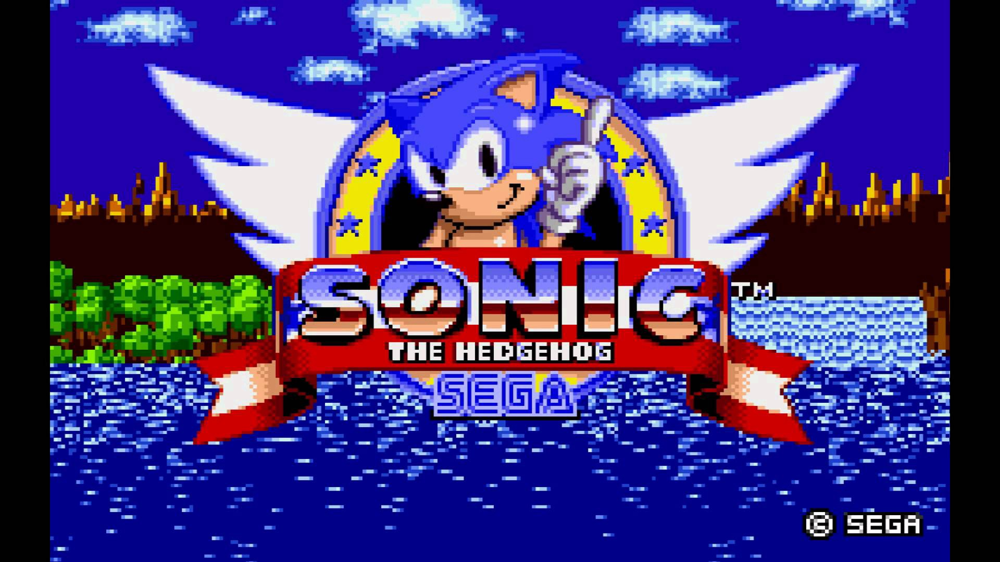

Sonic The hedgehog
imagem do jogo Sonic The hedgehog
Sonic the Hedgehog[a] é uma franquia japonesa de videogames e mídia criada e de propriedade da Sega. A franquia segue Sonic, um ouriço azul antropomórfico que luta contra o malvado Doutor Eggman, um cientista louco. Os principais jogos Sonic the Hedgehog são plataformas desenvolvidas principalmente pela Sonic Team; outros jogos, desenvolvidos por vários estúdios, incluem spin-offs nos gêneros de corrida, luta, festa e esportes. A franquia também incorpora mídia impressa, animações, longas-metragens e mercadorias.
A Sega desenvolveu o primeiro jogo Sonic, lançado em 1991 para o Sega Genesis, para competir com o mascote da Nintendo, Mario. Seu sucesso ajudou a Sega a se tornar uma das principais empresas de videogame durante a quarta geração de consoles de videogame no início dos anos 1990. O Sega Technical Institute desenvolveu os próximos três jogos Sonic, além do spin-off Sonic Spinball (1993). Após um hiato durante a mal sucedida era Saturno, o primeiro grande jogo 3D Sonic, Sonic Adventure, foi lançado em 1998 para o Dreamcast. Sega saiu do mercado de consoles e mudou para desenvolvimento de terceiros em 2001, continuando a série nos sistemas Nintendo, Xbox e PlayStation.
Embora os jogos Sonic geralmente tenham mecânicas e histórias de jogos únicas, eles apresentam elementos recorrentes, como o sistema de saúde baseado em anel, locais de nível e jogabilidade acelerada. Os jogos normalmente apresentam sonic configuração para parar os esquemas de Eggman para a dominação mundial, e o jogador navega níveis que incluem molas, encostas, poços sem fundo e loops verticais. Enquanto Sonic e Eggman eram os únicos personagens introduzidos no primeiro jogo, a série teria um grande elenco de personagens; alguns, como Miles "Tails" Prower, Knuckles the Echidna, e Shadow the Hedgehog, estrelaram spin-offs. A franquia já passou por cima de outras franquias de videogames em jogos como Mario & Sonic, Sega All-Stars e Super Smash Bros.
Sonic the Hedgehog é a principal franquia da Sega e uma das franquias de videogames mais vendidas, vendendo mais de 140 milhões de unidades até 2016 e arrecadação de mais de us $ 6 bilhões a partir de 2020. As vendas de séries e downloads de jogos para dispositivos móveis gratuitos totalizaram 1,14 bilhão de unidades a partir de 2020. Os jogos Gênesis Sonic foram descritos como representativos da cultura dos anos 1990 e listados entre os maiores de todos os tempos. Embora os jogos posteriores, notavelmente o reboot da série de 2006, tenham sido criticados por um declínio percebido na qualidade, Sonic é influente na indústria de videogames e é frequentemente referenciado na cultura popular. A franquia também é conhecida por seu fandom que produz mídia não oficial, como fan art e fangames.
Em 1990, a empresa japonesa de videogames Sega queria uma posição no mercado de consoles de videogame com seu console de 16 bits, o Sega Genesis. Os esforços da Sega tinham sido prejudicados pelo domínio da Nintendo; [1] o Genesis não tinha uma grande base de instalação e a Nintendo não levou a Sega a sério como concorrente. [2]: 414 Sega of America CEO Michael Katz tentou desafiar a Nintendo com a campanha de marketing "Genesis faz o que Nintendon't" e colaborando com atletas e celebridades para criar jogos. [2]: 405-406 Esses esforços não quebraram o domínio da Nintendo, e Katz foi substituído por Tom Kalinske, ex-Mattel. [2]: 423-424
O presidente da Sega, Hayao Nakayama, decidiu que a Sega precisava de uma série emblemática e mascote para competir com a franquia Mario da Nintendo. A Nintendo havia lançado recentemente Super Mario Bros. 3, na época o videogame mais vendido de todos os tempos. A estratégia da Sega foi baseada na portabilidade de seus jogos de arcade de sucesso para o Genesis; no entanto, Nakayama reconheceu que Sega precisava de um personagem estrela em um jogo que pudesse demonstrar o poder do hardware do Gênesis. [1] Uma disputa interna foi realizada para determinar um jogo emblemático,[3][4] com foco no público americano. Entre as equipes que trabalham com propostas estavam o artista Naoto Ohshima e o programador Yuji Naka.